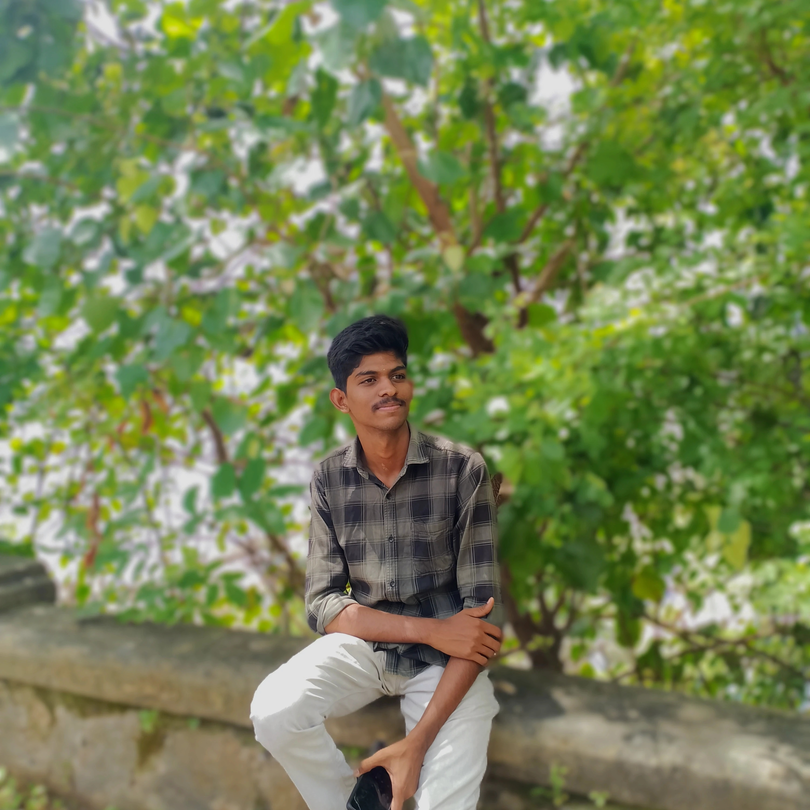

My name is Jikesh waran K. I am from Podanur, Coimbatore. I completed my B.Sc. Computer Technology degree at Shri Nehru Mahavidyalaya College of Arts and Science, Coimbatore. I am looking for an opportunity to start my career and grow in a professional environment.
Bachelor of Science (B.Sc.) – Computer Technology Shri Nehru Mahavidyalaya College of Arts and Science, Coimbatore Affiliated to Bharathiar University Year of Graduation: [2026] CGPA/Percentage: [75%]